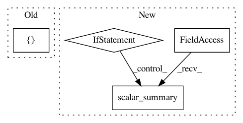

435560056e838c96100a0e80aee9dbbe57ea4c4f,mnist/hptuning/trainer/model.py,Model,build_graph,#Model#Any#Any#Any#,85
Before Change
if not is_training:
tf.scalar_summary("training/hptuning/metric", accuracy_op)
tensors.metric_updates = [loss_update, accuracy_update]
tensors.metric_values = [loss_op, accuracy_op]
return tensors
def build_train_graph(self, data_paths, batch_size):
After Change
// HYPERPARAMETER TUNING: Write the objective value.
if not is_training:
// TODO(b/33420312): remove the if once 0.12 is fully rolled out to prod.
if tf.__version__ < "0.12":
tf.scalar_summary("accuracy", accuracy_op)
tf.scalar_summary("loss", loss_op)
tf.scalar_summary("training/hptuning/metric", accuracy_op)
else:
tf.contrib.deprecated.scalar_summary("accuracy", accuracy_op)
tf.contrib.deprecated.scalar_summary("loss", loss_op)
tf.contrib.deprecated.scalar_summary("training/hptuning/metric",
accuracy_op)
tensors.metric_updates = loss_updates + accuracy_updates
tensors.metric_values = [loss_op, accuracy_op]
return tensors
In pattern: SUPERPATTERN
Frequency: 3
Non-data size: 4
Instances
Project Name: GoogleCloudPlatform/cloudml-samples
Commit Name: 435560056e838c96100a0e80aee9dbbe57ea4c4f
Time: 2016-12-15
Author: joshgc@google.com
File Name: mnist/hptuning/trainer/model.py
Class Name: Model
Method Name: build_graph
Project Name: GoogleCloudPlatform/cloudml-samples
Commit Name: 435560056e838c96100a0e80aee9dbbe57ea4c4f
Time: 2016-12-15
Author: joshgc@google.com
File Name: mnist/distributed/trainer/model.py
Class Name: Model
Method Name: build_graph
Project Name: jwyang/faster-rcnn.pytorch
Commit Name: 0a7220ed201eee2ad463264a72d5ce42c33dbcc1
Time: 2017-08-25
Author: jw2.yang@gmail.com
File Name: trainval_net.py
Class Name:
Method Name: